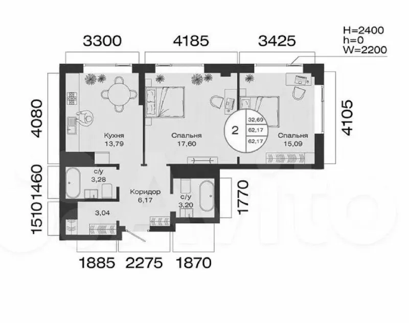

А сегодня разбираемся с такой задачкой — есть собственные 3 варианта (не все законные (!)). Помогите выбрать и дайте совет. Вопрос от Саши Ахмадуллина: Добрый день! 62 кв. м, этаж 9, газа нет. Проживать будут семья (муж, жена и 2 мальчика) Задача: сделать кухню гостиную…

Альбом · 4